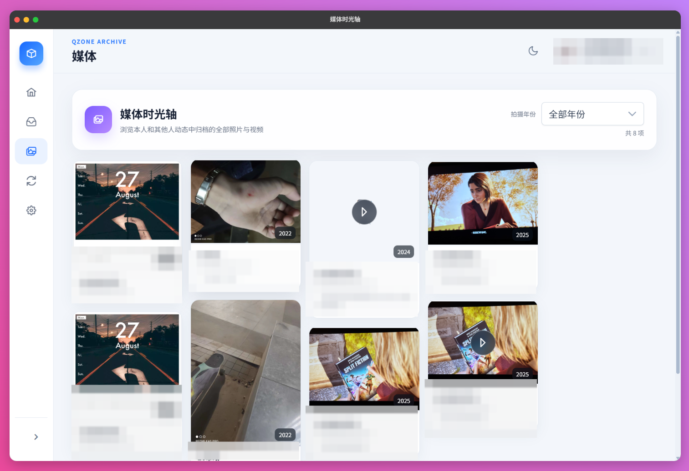
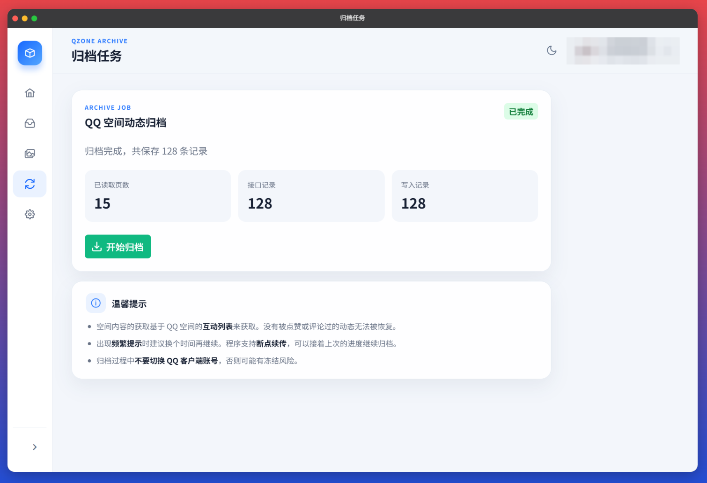
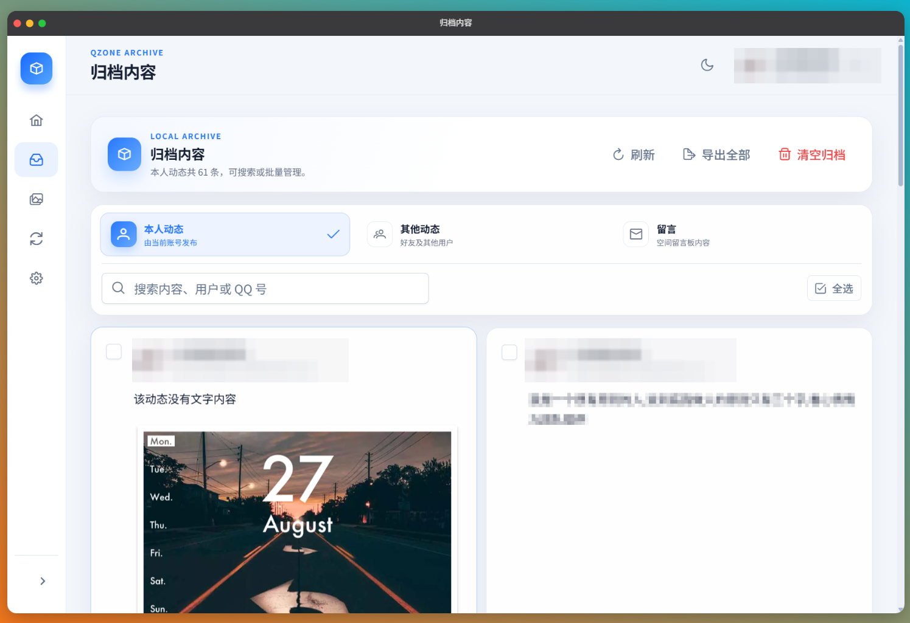

把 QQ 空间完整搬进硬盘——QzoneArchive 从安装到归档全流程
网龄十年以上，QQ 空间里躺着非主流说说、毕业合照和留言板的踩踩。用 QzoneArchive 把这些青春切片完整拉到本地，跟着这篇教程从零跑通全流程。
读完这篇教程，你就能把自己的 QQ 空间完整归档到本地——包括说说、日志、评论互动、图片视频，而且能离线翻阅按年份排好的媒体时光轴。
准备：先确认你能用
QzoneArchive 有桌面端和 Android 版，先对号入座。
桌面端支持 Windows、macOS 和 Linux，对机器配置几乎没要求——它跑的是 Rust 编译出来的原生程序，不吃内存不吃 CPU，归档任务在后台默默跑就行。
Android 版要求 Android 8.0 以上、arm64 架构。现在市面上能见到的手机基本都满足。移动端的好处是随时随地能跑，Wi-Fi 环境下放那儿充电就行；缺点是屏幕小、电池得盯着。
这里提个醒：安装包只从项目的官网拿。市场上出现过冒充 QzoneArchive 的恶意版本，可能带木马。别图省事从第三方应用商店搜。
前置条件很简单：一个能正常登录的 QQ 账号、一台能上网的设备、足够存下归档数据的磁盘空间。归档出来的是 SQLite 数据库，几千条动态的账号大概占几十到几百 MB，图片视频另算。
第一步：安装应用
桌面端
安装包下载完成后直接双击运行。Windows 上可能会弹出 SmartScreen 警告——这是因为发布者签名还没被微软收录，点"更多信息"→"仍要运行"就行。安装完成后启动应用，会看到一个干净的主界面，只有一个"扫码登录"按钮。
Android 端
手机浏览器打开下载页，下载 .apk 文件。下载完点系统通知里的文件开始安装，Android 11 及以上可能需要先允许你的浏览器或文件管理器安装未知来源应用——路径是设置 → 应用 → 特殊应用权限 → 安装未知应用。装完建议把这个开关关掉，保持默认安全状态。

第二步：扫码登录
启动应用后，界面中央会显示一个二维码。打开手机 QQ，右上角"+"号→"扫一扫"，对准屏幕上的二维码。手机上会弹出登录确认，点"确认登录"就行。
这里没什么坑，就是扫的时候别选错账号——如果你手机上登了好几个 QQ，确认一下扫码的那个是你要归档的账号。
登录成功后，应用会自动拉取账号的基本信息，然后跳到归档准备页面。
第三步：启动归档任务
归档准备页面上能看到你的昵称和空间概况。点"开始归档"按钮，任务就启动了。
归档跑起来之后，主界面会显示进度条和实时统计——已抓取多少条说说、多少条日志、多少条评论互动。这个过程可能比较久，取决于你空间里有多少内容。一个几千条动态的账号，在桌面端跑大概需要几十分钟到几小时。
归档过程中会遇到什么
你大概率会遇到限流暂停。QQ 空间的接口有频率限制，请求量累计到阈值就会被暂时拒绝。应用内置了频率保护模块，检测到限流错误码后会自动暂停并显示倒计时——比如"预计 12 分钟后恢复"。默认频率保护参数和可调选项在QzoneArchive文档里写得很清楚，别随便调。
这期间应用的其他功能正常可用：你可以浏览已经归档到的内容、整理一下分类、甚至导出 HTML。倒计时归零后归档会自动恢复，不用手动点任何按钮。

第四步：浏览你的离线档案
归档完成后，数据库里已经有了一份完整的本地副本。应用的浏览界面按内容类型分 Tab：说说、日志、留言板、相册，点哪个看哪个。
最有意思的功能是媒体时光轴——它把所有归档的图片和视频按拍摄或发布年份重新排列，形成一条顺着时间往前翻的相册轴。2008 年的毕业合照和 2024 年的周末自拍不再挤在一起，而是各自归位到对应的年份分组里。

点进任意年份，能看到那一年你发的所有图片，每张图下面有原图发布时的说说或日志链接。图片归档时就已经缓存到本地了，所以翻阅完全不消耗流量。视频默认只保留元数据，需要的时候手动点"缓存"下载到本地。
常见卡点
卡点一：限流后忍不住重试
倒计时还没到就手动点"继续归档"，每次请求都会触发限流，反而让平台风控更严格。应用的自动倒计时是安全策略——别打乱它，该等就等。
卡点二：手机装不上 APK
90% 是因为没允许未知来源安装。回到设置里找到对应的权限开关打开就行，装完记得关掉。如果你用的是华为或小米的某些定制系统，设置路径可能略有不同，搜"未知来源"就能找到。
卡点三：归档跑到一半退出了
归档进度是持久化在 SQLite 数据库里的，关掉应用再打开，重新登录同一个账号，会从断点继续跑——不会重头再来。放心退出。
往下还能玩什么
归档完不只是翻着看。你可以把数据库导出备份到云盘，也可以用内置的 HTML 导出功能生成一个独立的离线站点，用浏览器打开就能完整浏览整个空间的归档内容。想把旧日志重新整理成素材库也方便——导出后的 Markdown 和 JSON 格式可以直接喂给任何写作工具。
这套工具的源码在 GitHub、Gitee 和 GitCode 上都有同步的副本，本地编译或二次定制直接拉源码就行——国内网络走 Gitee 或 GitCode 会快不少。